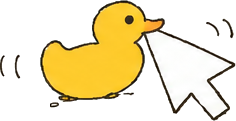
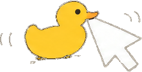

Harold, a rubber debugging duck on your Flipper, keeps your computer awake while you step away.
Press its buttons. Hold OK to quack.


Move your mouse over the screen, or touch it: Harold lets go.
duckwalk.fap from the releases, or from the Flipper app once it's listed.apps/USB/ on the SD card with qFlipper.Official firmware 1.5 or newer. The optional Windows helper lets Harold know when you're back.